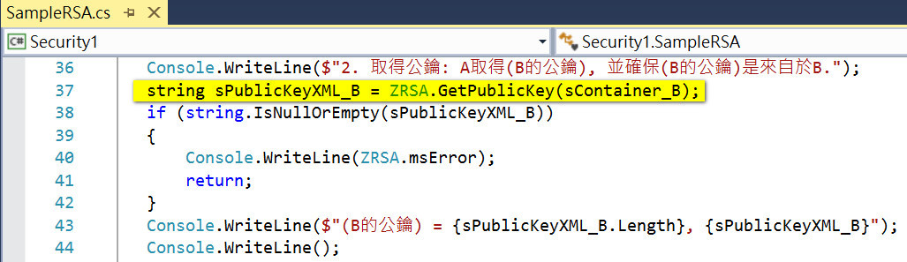
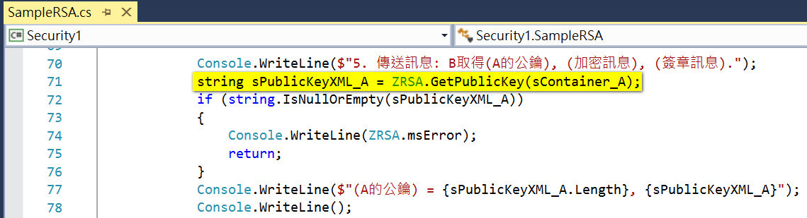

From:
hondachen@hotmail.com
Date:
2019-03-31
本文示範以 C# 實作 RSA 的步驟: RSA Source code
若使用者A, 需要傳送加密訊息給使用者B, 則步驟如下:原文參考
以下簽章訊息並非必要步驟, 可省略.
- 建立金鑰: AB雙方各自產生一組成對的(公鑰及私鑰).
公鑰作為加密用途, 須對外公開;
私鑰作為解密用途, 不對外公開, 必須嚴格保管, 確認授權後才能使用.
- 取得公鑰: A取得(B的公鑰), 並確保(B的公鑰)是來自於B.
公鑰應公開給任何人, 才能方便的接收來自任何人的加密訊息.
公鑰通常會存放在可信賴的第三方憑證組織 CA Server 上, 公開給任何人取得, 可確保公鑰是來自於B. 例如: VISA 組織.
公鑰的信賴方式: 1. 經由可信賴的第三方憑證組織的信賴程度. 2. 透過與B約定確認後的方法.
- 加密原文: A利用(B的公鑰), 加密(原文)後, 產生(加密訊息).
- 製作簽章: A利用(A的私鑰), 簽章(原文)後, 產生(簽章訊息).
- 傳送訊息: B取得(A的公鑰), (加密訊息), (簽章訊息).
- 解密訊息: B利用(B的私鑰), 解密(加密訊息), 取得(原文).
- 驗證簽章: B取得(A的公鑰), 驗證(簽章訊息), 確定(加密訊息)沒有被竄改.
1. 建立金鑰
AB雙方各自產生一組成對的(公鑰及私鑰).金鑰應存放在安全的容器中, 不建議存放在檔案或是程式碼中. 容器可選擇2種層級:
UseMachineKeyStore: 所有的使用者均可存取.
UseUserProtectedKey: 只有建立金鑰的使用者可以存取.
ProviderName 及 ProviderType 可選擇已安裝的金鑰提供者. 已安裝的金鑰提供者記錄在 registry: HKEY_LOCAL_MACHINE\SOFTWARE\Microsoft\Cryptography\Defaults 中. 例如:
Type 1 = Microsoft Strong Cryptographic Provider. = 預設.
Type 24 = Microsoft Enhanced RSA and AES Cryptographic Provider. = 新版.

2. 取得公鑰
A取得(B的公鑰), 並確保(B的公鑰)是來自於B.
公鑰內容如下例:
<RSAKeyValue><Modulus>uW5nX6hrDzcg+PUlPPFwwZauyxcUVKqSBnuEgDI/Jy3htFn00e4oSVuVsKXjJp0Y5wDj+w1zy0rL6lEA14cBDVNqUtNaKBL++A9j96OV9b9+FNq0NP3Zm0C+ahBuWKP7iJv+vDdwvIo9E6DRXw9bPPAFO3tf1Jj8P0V4AVYMcJ0=</Modulus><Exponent>AQAB</Exponent></RSAKeyValue>
ToXmlString(false): 不含私鑰.
ToXmlString(false): 包含私鑰.
3. 加密原文
A利用(B的公鑰), 加密(原文)後, 產生(加密訊息).Encrypt() 的第2個參數為 OAEP padding:
false=PKCS#1 v1.5 padding.
true=與 Windows XP 相容.
4. 製作簽章
A利用(A的私鑰), 簽章(原文)後, 產生(簽章訊息).製作簽章雜湊值的演算法, 這裡選用 SHA1 演算法傳入:
5. 傳送訊息
B取得(A的公鑰), (加密訊息), (簽章訊息).
6. 解密訊息
B利用(B的私鑰), 解密(加密訊息), 取得(原文).Decrypt() 的第2個參數為 OAEP padding, 必須選用跟加密相同的 paddying 方式:
false=PKCS#1 v1.5 padding.
true=與 Windows XP 相容.
7. 驗證簽章
B取得(A的公鑰), 驗證(簽章訊息), 確定(加密訊息)沒有被竄改.驗證簽章雜湊值的演算法, 必須跟製作簽章的演算法一致:
Log:
20190331, Honda, Create.